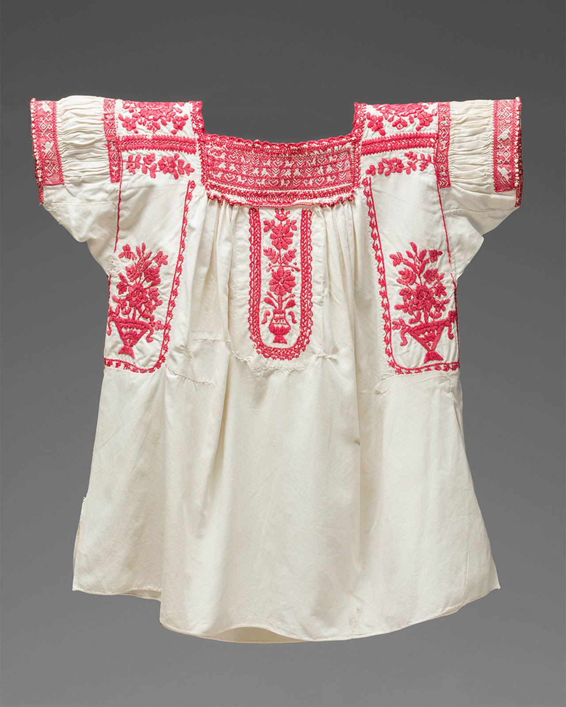
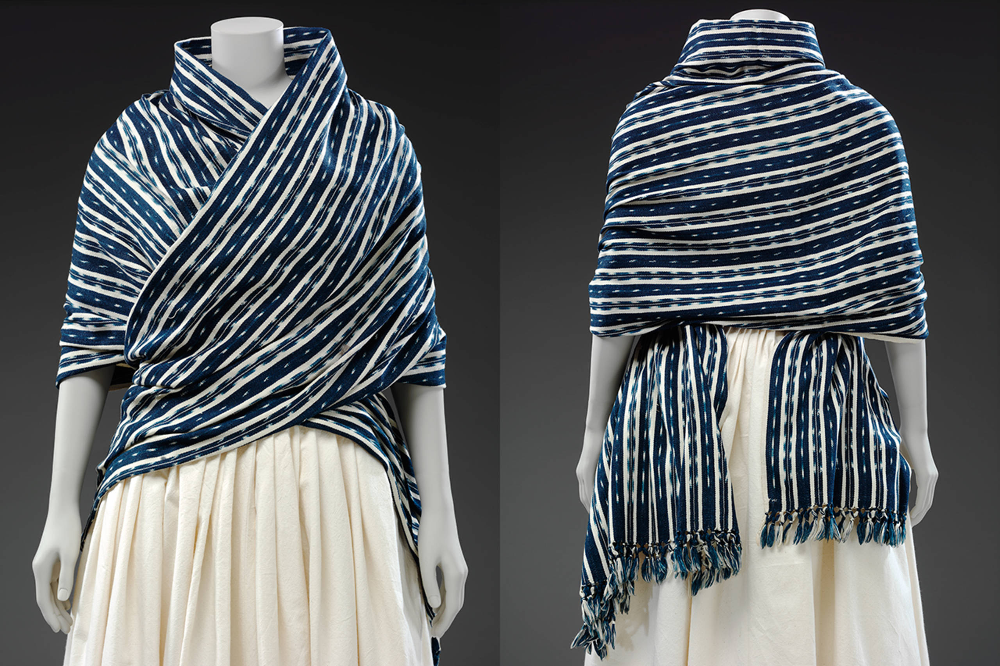
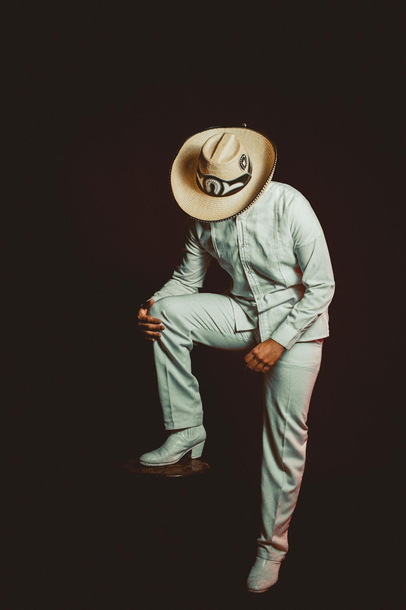

Ropa Tradicional


Las camisas mexicanas bordadas, conocidas por sus diseños y colores brillantes, son otra expresión de la cultura y la artesanía
del país. Estas camisas, o "huipiles" para las mujeres o "guayaberas" para los hombres, son inspirados en las tradiciones indígenas.
El bordado incluye diseños florales, patrones geométricos o imágenes simbólicas. Los hilos utilizados en el bordado generalmente contrastan
con la tela, generalmente de algodón o lino, creando ropa que son cómodas.

Estos rebozos están tejidos a mano utilizando técnicas tradicionales transmitidas de generación en generación utilizando telares. Los rebozos
son famosos por sus diversos patrones y colores, que varían significativamente de una región a otra, y pueden estar hechos de una variedad
de materiales. Se pueden utilizar para abrigarse, cubrir la cabeza o como un accesorio sobre los hombros. En las comunidades indígenas mexicanas
todavía hay muchas personas que usan estos rebozos.

Este diseño sencillo y limpio es el clásico “look” masculino Mexicano y se puede usar en diversas ocasiones porque la combinación de la
camiseta blanca y las botas refleja formalidad y practicidad.